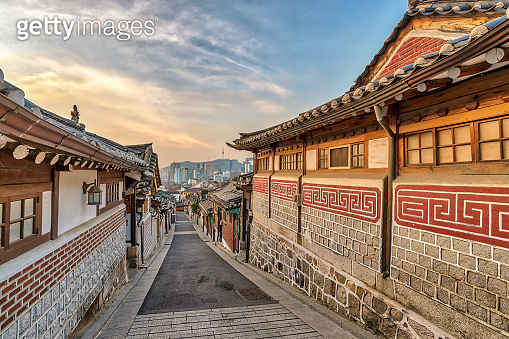
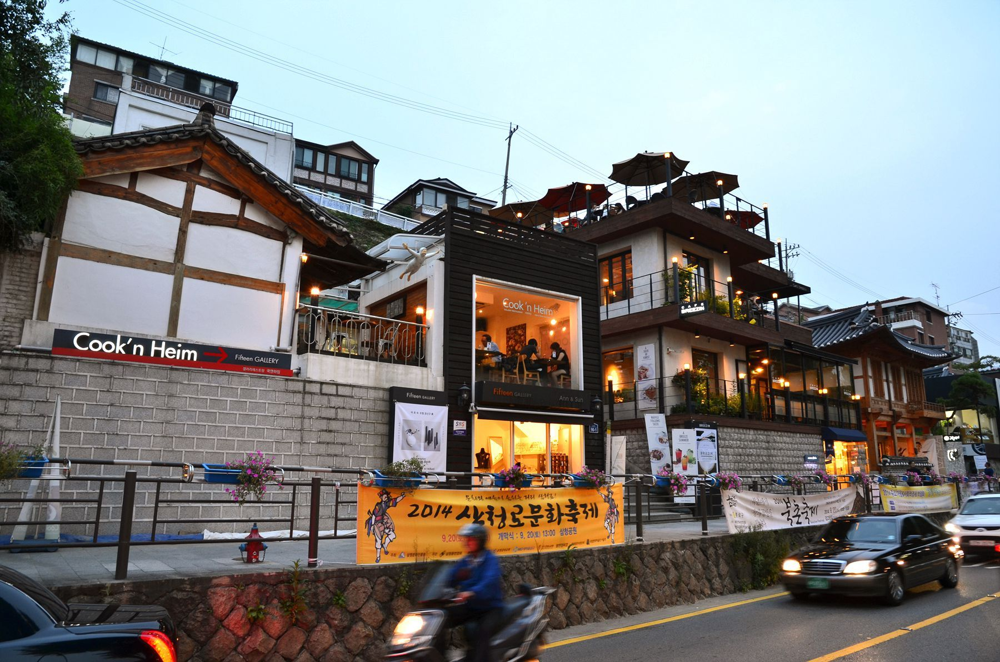
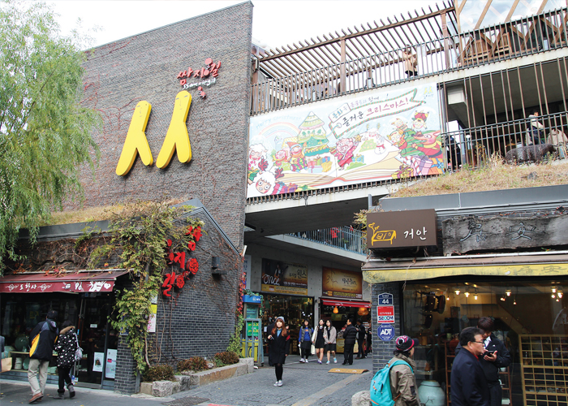

북촌마을 │
정보 │
사진 │
이야기
위치
개인적으로는 서울에 산다면 지하철보다는 버스를 추천한다. 버스가 훨씬 빠르다.
  
(왼쪽부터 북촌,삼청동,인사동)
추천코스
보통 북촌 한옥마을을 여행할 때는 주변 동네인 '삼청동'과'인사동'도 함께 여행하는 사람들이 있다.
세 동네는 서로 이어져 있기 때문에 하루 날을 잡고 구경을 해보는 것도 좋을 것 같다.